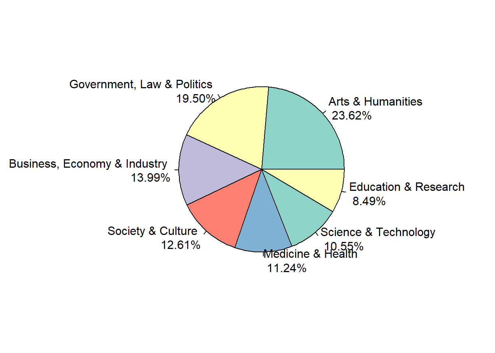
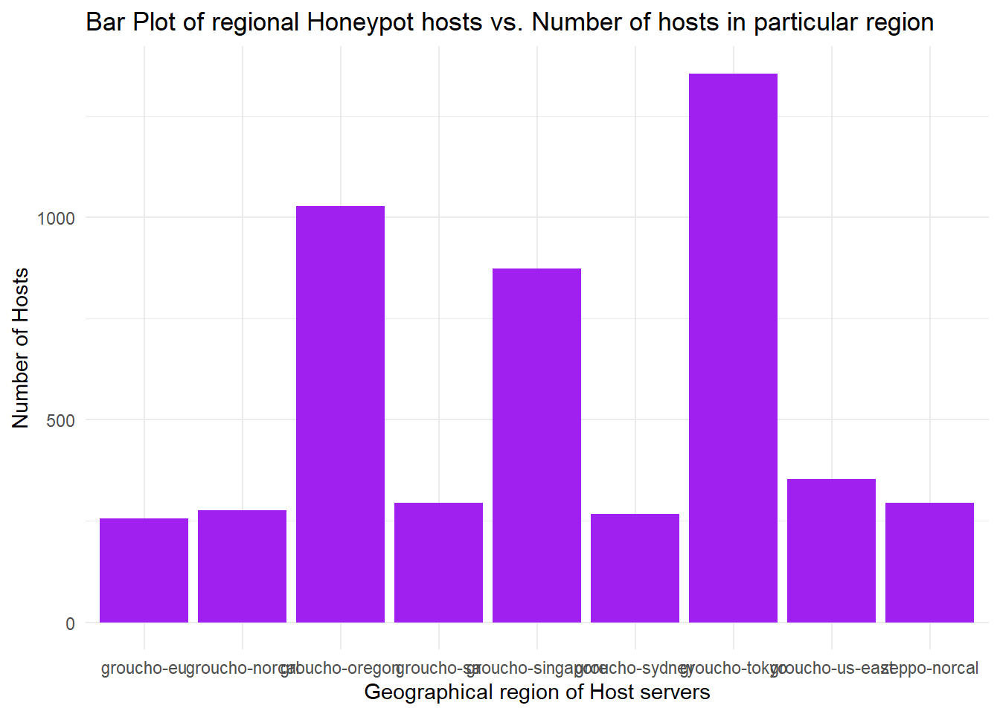
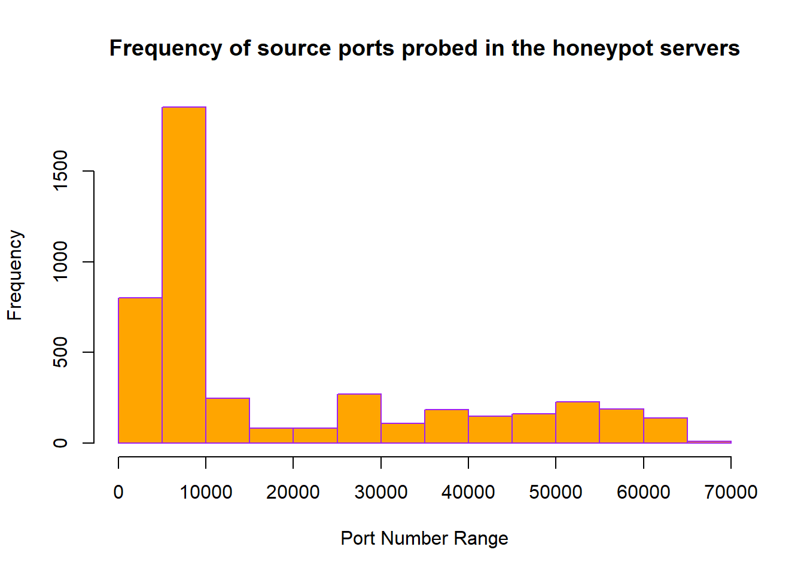
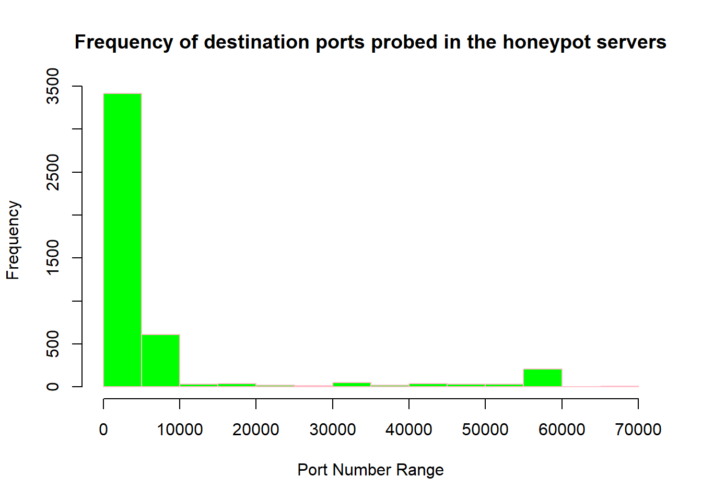
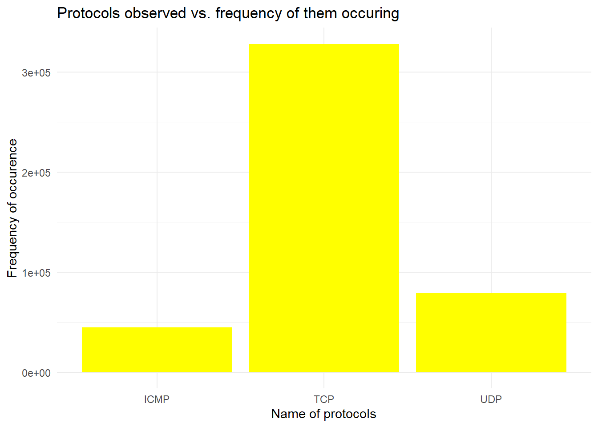
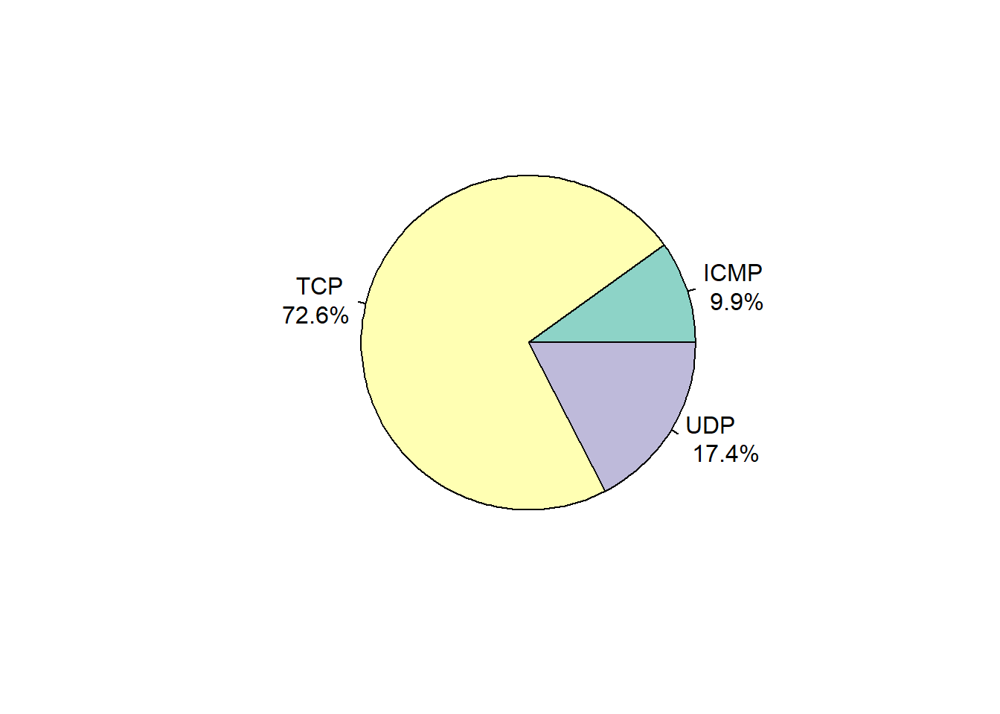
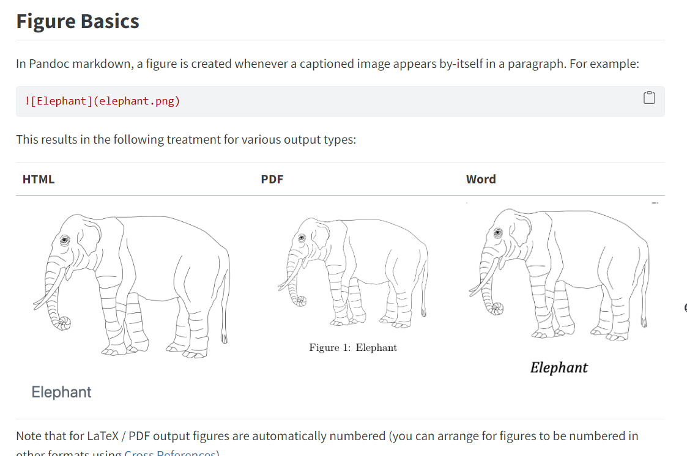
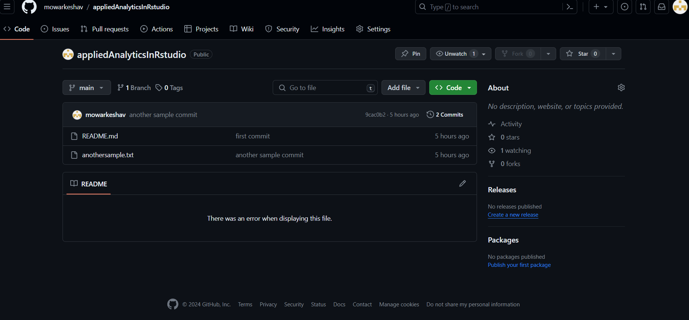

a <- 5
b <- 6
z <- a + b
z <- z + 11
z[1] 22Since R is a scripting language and I have pretty much gotten used to compiled languages it was a little difficult getting used to running separate lines of code and directing it to the console to get the output.
For now I have tried below lines of code just to get myself used to the console:-
a <- 5
b <- 6
z <- a + b
z <- z + 11
z[1] 22I got a warning message when I tried to convert my input from string to a number
#taking the below code from this URL https://www.geeksforgeeks.org/taking-input-from-user-in-r-programming/
var <- readline()var <- as.integer(var)
var[1] NA#building on above code to create a simple calculator
a <- readline()a <- as.integer(var)
a[1] NAb <- readline()b[1] ""b <- as.integer(var)
method_calc <- readline()if(method_calc=="add"){y <- a+b}#installing the required packages. these are the packages I used in assignment 1 as well
#| label: load-packages
#| warning: true
#| echo: true
library(readr)
library(scales)
Attaching package: 'scales'The following object is masked from 'package:readr':
col_factorlibrary(dplyr)
Attaching package: 'dplyr'The following objects are masked from 'package:stats':
filter, lagThe following objects are masked from 'package:base':
intersect, setdiff, setequal, unionlibrary(ggplot2)
library(tidyr)
library(RColorBrewer)
#commenting these out as they are causing error ---install.packages("tidyverse")
#commenting these out as they are causing error ---install.packages("ggplot2")The libraries which are included here help in data visualization like creating bar plots, scatter plots and bar graphs etc.
Now we will see how to utilize these libraries for my data set and come up with some beautiful pie charts and bar graphs. A few of these libraries are used for plotting an the library called “RColorBrewer” is used for creating nice color palettes which then can be used for your graphs. I like this feature.
When you run install.packages(“tidyverse”), R needs to know where to find the package. By default, it tries to connect to CRAN, but you need to specify a mirror. To fix this, explicitly set the CRAN mirror by using the repos argument in the install.packages() function. For example: install.packages(“tidyverse”, repos = “http://cran.us.r-project.org”))
#installing the required packages. these are the packages I used in assignment 1 as well
#| label: load-packages
#| warning: true
#| echo: true
library(readr)
library(scales)
library(dplyr)
library(ggplot2)
library(tidyr)
library(RColorBrewer)
install.packages("tidyverse", repos = "http://cran.us.r-project.org")package 'tidyverse' successfully unpacked and MD5 sums checked
The downloaded binary packages are in
C:\Users\Keshav\AppData\Local\Temp\RtmpYrl8Cr\downloaded_packagesinstall.packages("ggplot2", repos = "http://cran.us.r-project.org")Warning: package 'ggplot2' is in use and will not be installedThis includes multiple bar plots and pie charts showcasing different aspects of the dataset.
set.seed(50)
# source for the below code https://readr.tidyverse.org/reference/read_delim.html
#I noticed that the readtsv function has an option called "lazy" which helps reducing some extra configuration from the developer
cybersecdata1 <- readr::read_tsv('classification.tsv', col_names = TRUE,lazy=TRUE)Rows: 26909 Columns: 4
── Column specification ────────────────────────────────────────────────────────
Delimiter: "\t"
chr (4): Primary Category, Secondary Category, Title, URL
ℹ Use `spec()` to retrieve the full column specification for this data.
ℹ Specify the column types or set `show_col_types = FALSE` to quiet this message.# I am trying out sampling on this dataset just to see how the values are selected. I am taking only 500 records for this dataset
# source for the below code https://www.digitalocean.com/community/tutorials/sample-in-r
cybersecdata1_sampled <- sample(1:nrow(cybersecdata1), 500)
#after the code is sampled
cybersecdata1_final <- cybersecdata1[cybersecdata1_sampled,]Warning: One or more parsing issues, call `problems()` on your data frame for details,
e.g.:
dat <- vroom(...)
problems(dat)cybersecdata1_final# A tibble: 500 × 4
`Primary Category` `Secondary Category` Title URL
<chr> <chr> <chr> <chr>
1 Government, Law & Politics European Parliament Elections 2009 Animal… http…
2 Government, Law & Politics Credit Crunch Debt o… http…
3 Medicine & Health Conditions and Diseases Everym… http…
4 Arts & Humanities Geography Go-Geo… http…
5 Arts & Humanities Local History GELLIG… http…
6 Government, Law & Politics Credit Crunch Davent… http…
7 Digital Society Blogs Histor… http…
8 Arts & Humanities Live Art London… http…
9 Business, Economy & Industry Credit Crunch London… http…
10 Society & Culture Sports and Recreation Wenloc… http…
# ℹ 490 more rows#Next I group the dataset by the Primary Category column name as it will give an interesting insight. Primary Categories basically show which kind of industries or domains a website belongs to
# source for the below code https://www.linkedin.com/pulse/usage-groupby-dplyr-r-tuhin-tapadar/
group_cybersecdata1 <- cybersecdata1_final %>% group_by(`Primary Category`)
#After grouping , I also count the number of times a particular category comes up by using the name_count variable. I also summarize the whole output to get a brief detail on how the tibble looks
group_cybersecdata1_sum <- summarise(group_cybersecdata1, name_count = n())
#I used below code to order the tibble in decreasing order so that we can see which category had the most websites. The reason for doing this is to understand the adaptation of web technology by different kinds of industries.
#https://bookdown.org/ndphillips/YaRrr/order-sorting-data.html
group_cybersecdata1_ordered <- group_cybersecdata1_sum[order(group_cybersecdata1_sum$name_count, decreasing = TRUE),]
#After ordering I decide to take the top 7 categories which come up. The reason for doing this is because they are the most populated categories and it makes it easier to a statistic visualization of the data.
groupcybersecdata1_ordered_sample_final <- head(group_cybersecdata1_ordered,7)
gd2 <- groupcybersecdata1_ordered_sample_final
#Once the final datagram is ready which is "gd2". I took a decision to draw a pie chart for this dataset. I very well know that pie charts are not really a good way to show data visualization but since this is a non numerical dataset and I am new to R, this is the simplest way I could find to show the dataset.
#To make a simple pie chart , we have to initialize a few variables. One of them will be the content of the pie chart(could be numbers or percentage etc) and the other will be the label of the section.
#name of the primary category
namec <- gd2$name_count
#number of websites comprising this primary category in percentage
lbls <- gd2$`Primary Category`
#setting the color pallette.
myColorPal <- brewer.pal(5, "Set3")
#bar graph source code below
#https://r-graph-gallery.com/131-pie-plot-with-r.html
#Finaly executing the pie chart
pie(namec,labels = paste(lbls, "\n", percent(namec / sum(namec))),col=myColorPal)
#Time:-10:33 PM ## Attempting the work on my second dataset which I used in my assignment 1.
###Dataset:- https://datadrivensecurity.info/blog/pages/dds-dataset-collection.html
#I have taken this dataset to showcase some of the data transmission which happens on honeypot servers and get some insights
#the second dataset is taken from https://datadrivensecurity.info/blog/pages/dds-dataset-collection.html
#reading csv
cybersecdata2 <- read.csv("marx.csv")
#summary and head command just to get a sense of data
summary(cybersecdata2) datetime host src proto
Length:451581 Length:451581 Min. :1.678e+07 Length:451581
Class :character Class :character 1st Qu.:1.169e+09 Class :character
Mode :character Mode :character Median :2.031e+09 Mode :character
Mean :2.155e+09
3rd Qu.:3.165e+09
Max. :3.758e+09
type spt dpt
Min. : 0.0 Min. : 0 Min. : 0
1st Qu.: 8.0 1st Qu.: 6000 1st Qu.: 445
Median : 8.0 Median : 6000 Median : 1433
Mean : 7.5 Mean :18685 Mean : 6684
3rd Qu.: 8.0 3rd Qu.:33461 3rd Qu.: 3389
Max. :13.0 Max. :65535 Max. :65500
NA's :406770 NA's :44811 NA's :44811 head(cybersecdata2,10) datetime host src proto type spt dpt
1 2013-03-03 21:53:59 groucho-oregon 1032051418 TCP NA 6000 1433
2 2013-03-03 21:57:01 groucho-oregon 1347834426 UDP NA 5270 5060
3 2013-03-03 21:58:10 groucho-oregon 2947856490 TCP NA 2489 1080
4 2013-03-03 21:58:09 groucho-us-east 841842716 UDP NA 43235 1900
5 2013-03-03 21:58:20 groucho-singapore 3587648279 TCP NA 56577 80
6 2013-03-03 21:58:41 groucho-tokyo 3323217250 TCP NA 32628 2323
7 2013-03-03 21:59:36 groucho-oregon 3730416887 TCP NA 6000 1433
8 2013-03-03 22:07:05 groucho-singapore 3738622573 TCP NA 6000 3306
9 2013-03-03 22:12:02 groucho-oregon 3683919430 TCP NA 6000 1433
10 2013-03-03 22:14:19 groucho-singapore 1007884304 TCP NA 6000 1433#The date format is a bit weird so I decided to make it simpler.
cybersecdata2$datetime<- as.Date(cybersecdata2$datetime, format = "%Y-%m-%d")
#dataset after changing date format
head(cybersecdata2,10) datetime host src proto type spt dpt
1 2013-03-03 groucho-oregon 1032051418 TCP NA 6000 1433
2 2013-03-03 groucho-oregon 1347834426 UDP NA 5270 5060
3 2013-03-03 groucho-oregon 2947856490 TCP NA 2489 1080
4 2013-03-03 groucho-us-east 841842716 UDP NA 43235 1900
5 2013-03-03 groucho-singapore 3587648279 TCP NA 56577 80
6 2013-03-03 groucho-tokyo 3323217250 TCP NA 32628 2323
7 2013-03-03 groucho-oregon 3730416887 TCP NA 6000 1433
8 2013-03-03 groucho-singapore 3738622573 TCP NA 6000 3306
9 2013-03-03 groucho-oregon 3683919430 TCP NA 6000 1433
10 2013-03-03 groucho-singapore 1007884304 TCP NA 6000 1433#lets sample the data to get fewer records
cybersecdata2_sampled<- sample(1:nrow(cybersecdata2), 5000)
cybersecdata2_final <- cybersecdata2[cybersecdata2_sampled,]
head(cybersecdata2_final,10) datetime host src proto type spt dpt
197913 2013-06-05 groucho-tokyo 3223748177 TCP NA 1967 445
447449 2013-09-06 zeppo-norcal 3736745009 TCP NA 6000 8080
313227 2013-07-24 groucho-tokyo 45792730 UDP NA 10100 2193
422949 2013-08-27 groucho-singapore 1033063135 TCP NA 6000 3306
66963 2013-04-08 groucho-us-east 1914917414 UDP NA 14702 54521
138951 2013-05-10 groucho-tokyo 2992298268 TCP NA 3441 445
384370 2013-08-18 groucho-sa 1017973655 TCP NA 6000 7777
93426 2013-04-20 groucho-eu 2953454577 TCP NA 27407 9943
336694 2013-07-30 groucho-singapore 1313866355 TCP NA 3901 23
272999 2013-07-09 groucho-singapore 3417478163 ICMP 8 NA NA#grouping the hosts by region and taking their counts.for this analysis I decided to group servers by their region. this will tell us how many data transmissions happened in which region.
hosts_groupby <- cybersecdata2_final %>% group_by(host)
hosts_sum <- summarise(hosts_groupby, name_count = n())
#plotting a bar plot for showcasing server location and the number of servers in each location
ggplot(hosts_sum, aes(x = hosts_sum$host, y = hosts_sum$name_count)) +
geom_bar(stat = "identity", fill = "purple") + # Bar plot with identity statistic
labs(x = "Geographical region of Host servers", y = "Number of Hosts") + # Labels for axes
ggtitle("Bar Plot of regional Honeypot hosts vs. Number of hosts in particular region") + # Title for the plot
theme_minimal() Warning: Use of `hosts_sum$host` is discouraged.
ℹ Use `host` instead.Warning: Use of `hosts_sum$name_count` is discouraged.
ℹ Use `name_count` instead.
#below visualizations will show simple freququncy of data transmission in terms of ports and protocols. for example which protocol was high frequency etc.
#plotting a histogram to show the relation between source port number ranges and their values
hist(cybersecdata2_final$spt,
main = "Frequency of source ports probed in the honeypot servers",
xlab = "Port Number Range",
border = "purple",
col = "orange",)
#plotting a histogram to show the relation between destination port number ranges and their values
hist(cybersecdata2_final$dpt,
main = "Frequency of destination ports probed in the honeypot servers",
xlab = "Port Number Range",
border = "pink",
col = "green",)
#now I am grouping different protocols and try to show their percentage share in the data collected using both a bar plot and a pie chart
#PLEASE NOTE THAT I AM NOT TAKING SAMPLED DATA HERE. I AM RUNNING THIS ON THE ORIGINAL DATASET.
proto_groupby <- cybersecdata2 %>% group_by(proto)
proto_sum <- summarise(proto_groupby, num_proto = n())
#this is the bar plot showing the freuqncy of different 3 protocols
ggplot(proto_sum, aes(x = proto_sum$proto, y = proto_sum$num_proto)) +
geom_bar(stat = "identity", fill = "yellow") + # Bar plot with identity statistic
labs(x = "Name of protocols", y = "Frequency of occurence") + # Labels for axes
ggtitle("Protocols observed vs. frequency of them occuring") + # Title for the plot
theme_minimal()Warning: Use of `proto_sum$proto` is discouraged.
ℹ Use `proto` instead.Warning: Use of `proto_sum$num_proto` is discouraged.
ℹ Use `num_proto` instead.
#plotting a pie chart for the above scenario
frequency_of_proto <- proto_sum$num_proto
proto_lbls <- proto_sum$proto
myColorPal2 <- brewer.pal(5, "Set3")
pie(frequency_of_proto, labels = paste(proto_lbls, "\n", percent(frequency_of_proto / sum(frequency_of_proto))), col = myColorPal2)
I wanted to learn how to add images easily in Markdown and I found the below website really helpful. All I needed to remember was to put the image file in my working directory If I am trying to avoid writing the full path of the file.
https://quarto.org/docs/authoring/figures.html

For today it is just a sample text file commit. Later throughout assignment 3 I will be pushing whatever code I will be writing.
